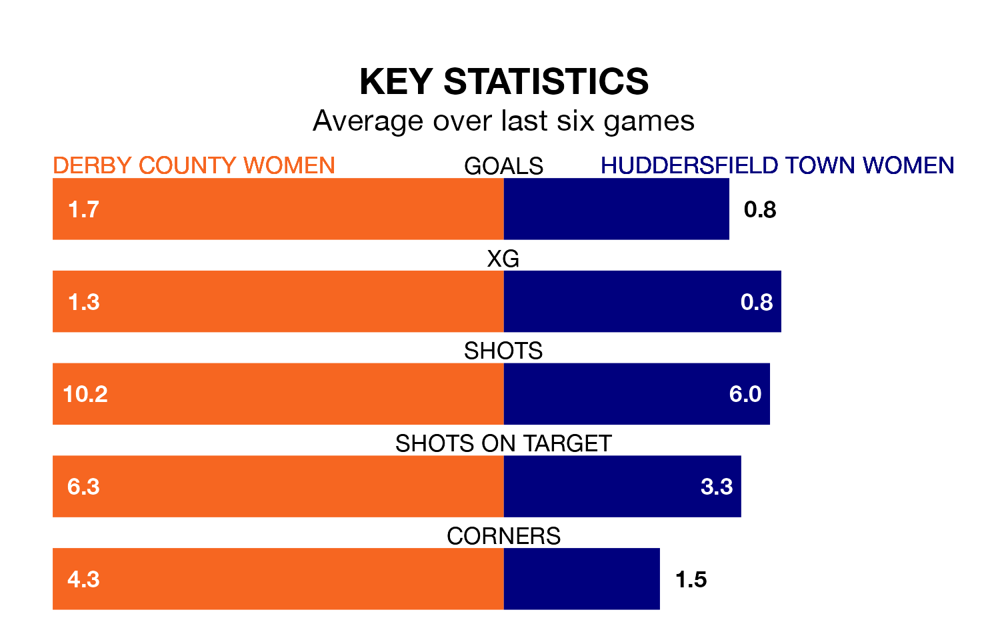

Struggling Huddersfield Town Women face Derby County Women away on Sunday looking to build on a win in their last league outing.
After securing all three points with a 2-1 victory over Stoke City Women on January 7, Huddersfield Town sit 11th in Women's National League Premier Division North.
They travel to play a Derby County side fifth in the standings, who lost in their last match, 2-1 against West Brom WFC, on February 4.
With 11 goals in 11 games so far this season, Huddersfield Town are the league's joint-second-lowest scorers with 1.0 goals per game. And they are conceding more than average, letting in 35 goals at a rate of 3.2 per game.
Derby County, meanwhile, are above average scorers, with 2.1 goals per game, compared to a league average of 1.8. They have conceded 1.2 goals per game.
The home team are in mixed form in Women's National League Premier Division North, with three wins and a draw from their last six games.
With a win and five losses over that period, the visitors' form is much worse – they have taken three points from 18, compared to Derby County's 10.
In the last 10 years, Derby County and Huddersfield Town have played each other on seven occasions. Derby County won five of them, Huddersfield Town one, and they drew once.
On average, Derby County scored 2.6 goals and Huddersfield Town 1.1 in those matches.
Their last meeting was on October 15, when Derby County won 4-0 away.
Updated: 10:01 (UTC), 06/02/24